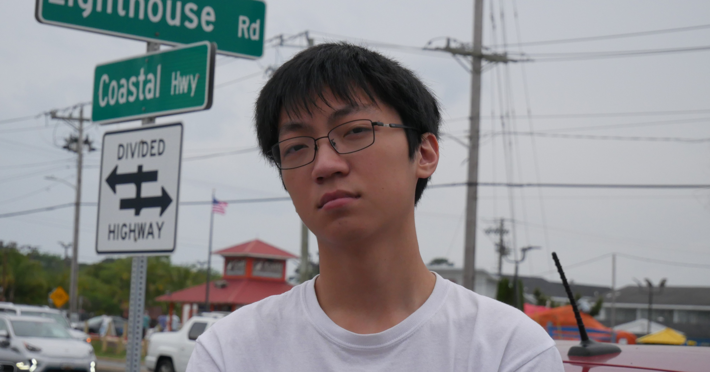
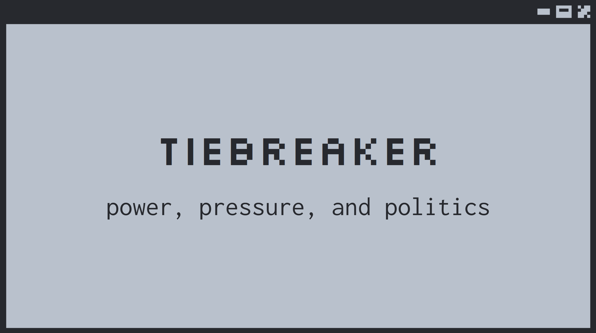
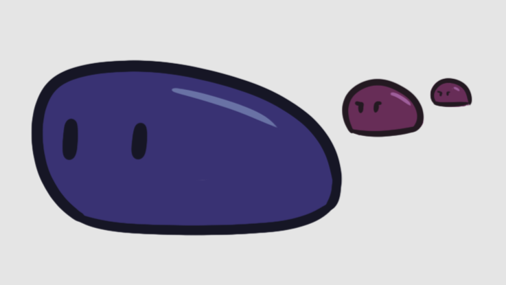

About Me

Hi!
My name is Jaden. I'm an Immersive Media Design major + Creative Writing minor at the University of Maryland, and video games are my passion. I've always been drawn to how brutally effective interactive media is as a method of storytelling; after all, what better way to tell a story and tug on someone's heartstrings than to place your audience directly in the story? This is a documentation of my game development journey thus far.If you're looking for more of a narrative game prototype, with a story that unravels the more you explore, try tiebreaker.

If you're looking for an arcade-style survival game with a unique twist, try don't get blobbed.
My obsession with storytelling continues on the page: check out my creative writing portfolio!